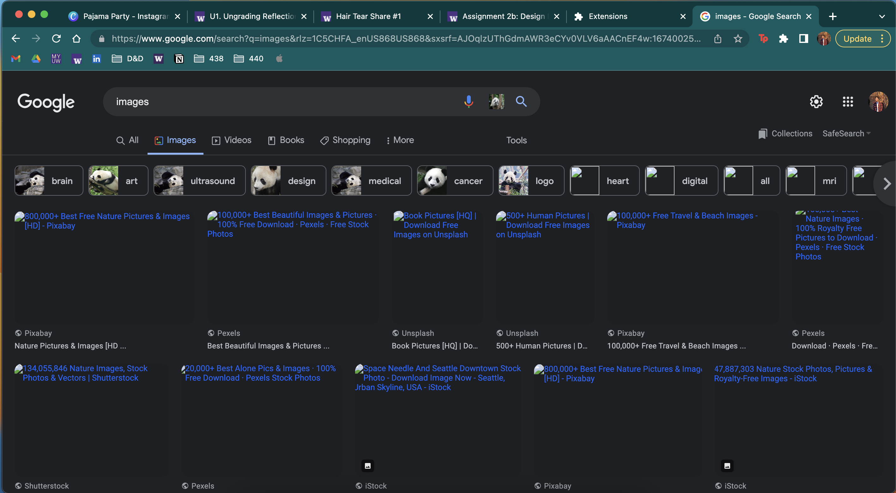
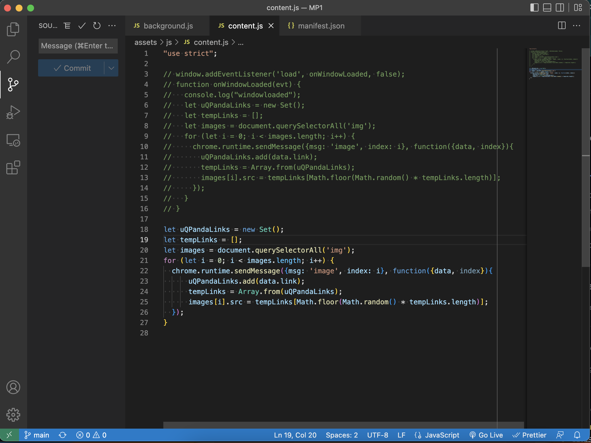

MP1 Writeup.
Overview and Usage
I created a Google chrome extension that replaces all images on the page with panda images. To run the code, you must unpack the extension in chrome://extensions/. Once it has been toggled on, any page you load from now until it is toggled off, will have its images replaced by pandas. Any pages that were already loaded before the extension was unpacked and toggled on must be refreshed for the extension to work.

Development Process
Learning Chrome Extensions
Unfortunately, I missed the class lecture on extensions, so I had to spend a lot of my own time learning how to create one. I did this by reading Google's documentation and looking over lecture slides. This was all new to me, so I spent a lot of time surfing through pages and documentation until I felt comfortable with how the chrome browser works. Then, I coped the example code from Google that estimated reading time on certain pages to get a feeling for it on my VSCode.
Original Idea
My original idea was to create an extension that replaced all images on the browser based on one that was uploaded by the user in the HTML opup that appears when clicking on the extension. However, this ended up being a much more difficult task than I anticipated. Replacing images was easy, however uploading a file onto the browser that would later update the page after it had loaded was a task I was unable to do due to my inexperience with forms and Google Chrome.
Writing Code
After trying to conceptualize how my original idea would work, I attempted to implement it, but got nothing working. I even tried using local files, however the extensions do not normally recognize your local server's files when an extension is loaded unless it is in the manifest. After discovering all of this, the task became to daunting and I opted for a simpler extension that would replace all images that were obtained from a REST API. This is where I got my panda images from.

Updating Knowledge and Code Based on Previous Output
I had to refresh my knowledge on calling APIs on JavaScript (since I took CSE 154 Web Programming) and look up other resources on how other people incorporated this idea. This is where I found a Pikachu Image Replacer which was perfect. This code was an inspiration and template for my code to replace images with pandas.
Issue Deep-Dive
A few issues appeared during the process of making this extension. One of them was trying to upload local files on the extension's HTML to be used on the browser and that was one that I had to give up on due to the complexity. The next issue I ran into was due to the limitations of the API. The API can limit requests if the requester is making too many requests within a span of time. This is to preserve servers and prevent bots from spamming data. However, because my extension makes multiple calls to the API (for each image), it gets caught in the mess. To resolve this issue, I had to use my understanding of data structures and JavaScript. The first 40 or so links request would go through, but afterwards would get 404 errors. So I saved all the unique panda images links from the API into a set and if there was a 404 request, I would choose an image from the set instead of a broken image link. This ended up working wonders since the requests weren't synchronous and ended up being a timing mess with the window loading. The last issue I ran into was that some images were not being replaced with pandas, which is where I realized some img tags use a src and some use a srcset, so I updated my code accordingly.


Ideas and Future
- Ability to upload an image on the extension HTML popup
- Ability to easily toggle on and off button instead of going into chrome://extensions/
- Loading images as the page loads/user continues scrolling
- Replacing all types of images, even ones using a div tag